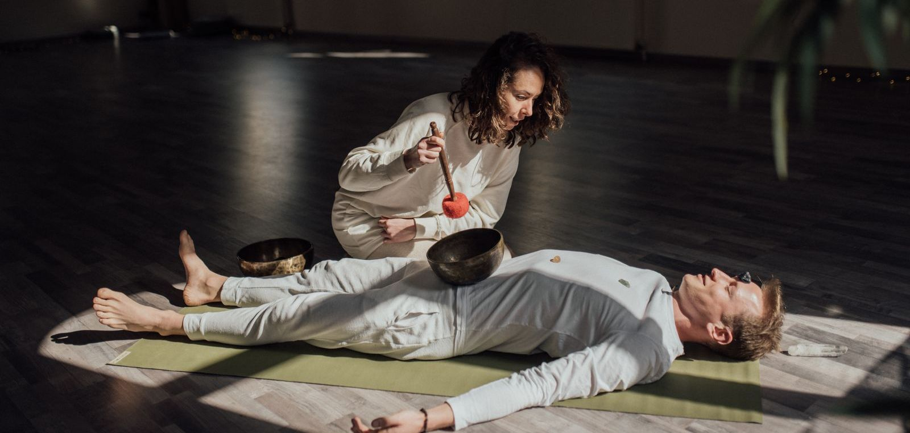

Calendar › What to expect
First timer's guideWhat to expect at a sound bath
You lie down, stay dressed, and listen while someone plays gongs, bowls, and chimes for about an hour. There is nothing to perform and no way to do it wrong. If you are deciding whether to go, or a little nervous about it, here are honest answers to the questions people actually ask.

What actually happens at a sound bath?
You arrive, take off your shoes, and find a spot on the floor. Most rooms give you a mat; you lie down on your back, cover up if you want, and get comfortable. The facilitator talks for a minute or two, then begins playing: gongs, crystal or metal singing bowls, chimes, sometimes voice or a drum. You stay still and listen. That is the whole thing. Sessions usually run 45 to 75 minutes, you keep your clothes on, and you do not have to do anything but rest.
What should I wear and bring?
Wear clothes you can lie down in comfortably, and bring a layer. Rooms get cool once you have been still for a while, so socks and a sweater are smart. Many spaces provide mats, bolsters, and blankets, but your own blanket, a small pillow, and water are never wrong. Each listing on the calendar notes what the room supplies when the organizer tells us.
Do I have to meditate the “right” way?
No. There is no technique to get right and nothing you have to concentrate on. Your mind will wander, you will notice the sounds, you will drift off and come back. All of that is fine. Keep your eyes closed or open, shift when you need to, and let the session do the work. Nobody is watching or grading you.
Can I fall asleep?
Yes, and plenty of people do. Falling asleep is not a failure; it means your body relaxed enough to let go, which is part of the point. If you snore a little, no one minds. You still get the rest whether you stay awake, drift, or sleep straight through.
Is a sound bath religious?
Mostly no — though the honest answer has more texture than a yes or a no. A basic sound bath asks nothing of your beliefs: most sessions are simply rest and sound, and some add ceremony such as a cacao drink, chanting, or a spiritual framing. If the question matters to you, ask the facilitator directly — a good one will answer plainly — and read the longer answer.
What if I feel emotional or cry?
That is normal and completely allowed. Deep rest can bring feelings up, and some people tear up or cry without quite knowing why. Facilitators expect it and will not make it a thing. Bring a tissue if you like, stay as long as you are comfortable, and know you do not owe anyone an explanation.
I get anxious in groups or feel closed-in. Can I still go?
Yes, and a few small choices make it easier. Pick a smaller session over a packed one, arrive early so you are not walking into a full room, and set up near the door or along an edge where you have space. Tell the facilitator when you arrive that you would like an easy way out; they will understand. You can leave at any point, quietly, if you need to.
How long is a session, and what does it cost?
Most sound baths run 45 to 75 minutes. On the Front Range, prices usually land between $20 and $55, and some sessions are free or by donation. Every listing on the calendar shows its own price, and the ticket link goes straight to the organizer so you can see the details before you commit.
How do I choose my first sound bath?
Keep it practical. Pick something close to home so getting there is easy, at a time when you can relax afterward instead of rushing off. A smaller room is a gentle first experience. From there, a few pages on this site do the legwork:
- Browse this week's sessions on the calendar.
- See where they are on the map and find one nearby.
- Check parking and accessibility on the venue pages.
- Read about the facilitators leading each session.
I am pregnant, have a pacemaker or another medical device, epilepsy, or PTSD. Is it safe for me?
We cannot give medical advice, and it would not be honest to tell you a session is safe or unsafe for your situation. What helps: if you have a health condition or concern, mention it to the facilitator when you book. They can tell you what the session involves, including how loud it gets and which instruments they use, and adapt where they can. It is also worth a quick word with your doctor. With that information, you can decide what is right for you.
Ready to find one?
Everything you need to pick a first session is a click away.